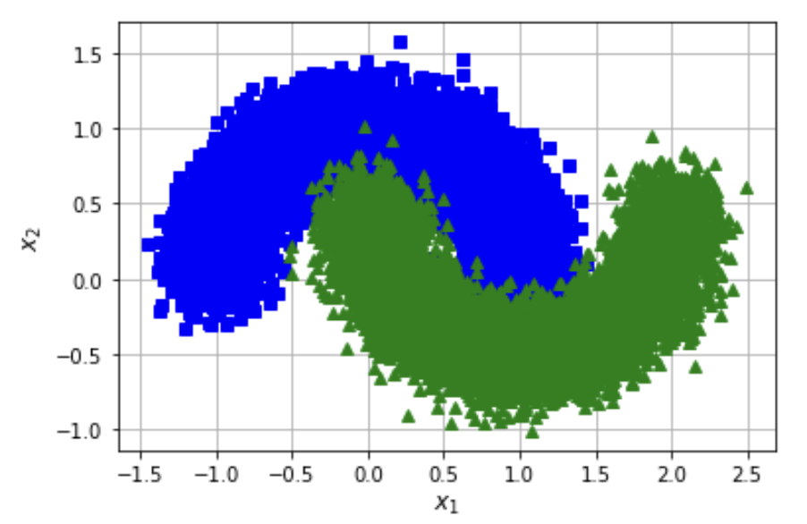

Week 2.3: Dask¶
Introduction¶
This week and the next, we are talking about Dask: a flexible library for parallal computing in Python. The first part of this two-part invention we are working on our own computer; the second part we will look into methods of making use of the network to really distribute our calculations. The exercises of this week are just meant to get some hands-on experience with Dask, so the elaborations do not form part of your graded portfolio.
You need to install Dask using conda or pip; have look at the documentation to see how that is done. Also, for the second part of this exercise we are going to work with dask_ml, so you can perhaps install that while you're at it. We also make use of sklearn, so in case you haven't done already you should install this as well.
Excercise 1: from pandas to dask DataFrame¶
In this notebook, you will be working with the New York City Airline data. This dataset is only about 200MB, so that you can download it in a reasonable time, but dask.dataframe will scale to datasets much larger than memory. Download and run the prep.py-script, either in a Notebook or from the command line. This little script will download ten csv-files that make up the Airline data. Have a look at one of them to get an idea of how they look.
As we have demonstrated during the plenary part, you need to setup a local cluster for Dask to work with. The relevant code is repeated below. Run this code and open a browser window to the link that is will provide.
from dask.distributed import Client
client = Client(n_workers=4)
client
Read all the flights-data that you have just downloaded in a Dask dataframe – by convention they are called ddf (instead of df for regular Pandas dataframes). You should use read_csv as you are used to, but this time use it on your Dask dataframe. What happens when you do ddf.head() and can you explain the difference with a regular pandas dataframe? Also, use ddf.visualise() to get an idea of what the dataframe looks like.
As is explained during the plenary part, you need to call compute() in orde to actually do something with the data in your ddf. Some functions, such as len() or head() implicitely trigger a call to compute() (can you imagine why?). However, in this particular case when you call ddf.tail(), the system will respond with an error.
Unlike pandas.read_csv which reads in the entire file before inferring datatypes, dask.dataframe.read_csv only reads in a sample from the beginning of the file (or first file if using a glob). These inferred datatypes are then enforced when reading all partitions.
In this case, the datatypes inferred in the sample are incorrect. The first n rows have no value for CRSElapsedTime (which pandas infers as a float), and later on turn out to be strings (object dtype). Note that Dask gives an informative error message about the mismatch. When this happens you have a few options:
- Specify dtypes directly using the
dtypekeyword. This is the recommended solution, as it's the least error prone (better to be explicit than implicit) and also the most performant. - Increase the size of the
samplekeyword (in bytes) - Use
assume_missingto makedaskassume that columns inferred to beint(which don't allow missing values) are actuallyfloats(which do allow missing values). In our particular case this doesn't apply.
Use the first option and specify the correct datatypes for TailNum, CRSElapsedTime and Cancelled:
ddf = dd.read_csv(
os.path.join("data", "nycflights", "*.csv"),
parse_dates={"Date": [0, 1, 2]},
dtype={"TailNum": str, "CRSElapsedTime": float, "Cancelled": bool},
)
Now, use your pandas-knowledge to aswer the questions below. Don't forget to have the client-status-window open so that you can see what is happening. Remember you have to call compute() in order to actually get the results...
- In total, how many non-canceled flights were taken from each airport?
- What was the average departure delay from each airport?
- Per airport, what day of the week has the worst average departure delay?
- What are the busiest hours?
Exercise 2: Dask_ML¶
step 1: use dask as a backend¶
The second part of these exerises are about dask_ml. Again, this is more in order to get some hands-on experience using the library. Begin by creating a new client and opening that in a new window.
We start by using GridSearchCV to determine the best parameters for a Support Vector Classifier to classify some random data. Have a look at the code below:
X, y = make_classification(n_samples=1000, random_state=0)
param_grid = {"C": [0.001, 0.01, 0.1, 0.5, 1.0, 2.0, 5.0, 10.0],
"kernel": ['rbf', 'poly', 'sigmoid'],
"shrinking": [True, False]}
grid_search = GridSearchCV(SVC(gamma='auto', random_state=0, probability=True),
param_grid=param_grid,
return_train_score=False,
cv=3,
n_jobs=-1)
grid_search.fit(X, y)
Scikit-learn uses joblib for single-machine parallelism. This lets you train most estimators (anything that accepts an n_jobs parameter) using all the cores of your laptop or workstation.
Alternatively, Scikit-Learn can use Dask for parallelism. This lets you train those estimators using all the cores of your cluster without significantly changing your code. In that case, you have to provide the string dask to the method parallel_backend. Again, have the client-status-window open in order to monitor the workings.
import joblib
with joblib.parallel_backend('dask'):
#YOUR CODE HERE
In either case, you can use the cv_results_-property of the trained model to investigate the best parameters for the classification (even though that is not really the purpose for this exercise). Use pd.DataFrame(grid_search.cv_results_) to put the results in a dataframe.
step 2: classify with dask_ml¶
In this last exercise, we will create a classifier based on a sklearn moon-dataset. Download the file [moons-csv](files/moons-data.csv) and load this in a pandas dataframe. Create a numpy matrixXon basis of the first two column of this dataframe, and a number arrayyon basis on the third. TheXholds our data and oury` the classes.
Use sklearn.model_selection.train_test_split() to split the data in two seperate parts, with 80% trainings-data and 20% test-data. Make two logistic regressors, one from sklearn and one from ml_dask.
Train both of these regressors on the trainings-data and check their validity on basis of the test-data. Experiment with different values for the hyperparameters. Do you see a difference between the results?
Lastly, plot a scatter-plot of the test-data including the classes (either predicted of actual).
